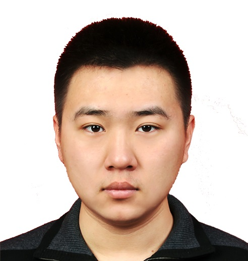

Yu Xiang ↗
Co-founder
Research in robotics and computer vision. Professor at UT Dallas; previously NVIDIA, Stanford, and the University of Washington.
INTELLIGENCE BEYOND A SINGLE ROBOT
AllHands Robotics is building the unified data and action layer for robot foundation models.
We are building unified action representations, data, and foundation models that enable manipulation skills to transfer across different robots.
01 / THE PROBLEM
Different robots use different action spaces, embodiments, and datasets. A skill learned on one robot cannot easily transfer to another, making robot data fragmented and expensive to scale.
Separate hardware. Separate data. Separate learning.
02 / THE TECHNOLOGY
Our unified action representation provides a common interface across different robot embodiments, enabling skills and data to transfer between them.
Our technology builds on UHAS, Unified Hand Action Space ↗, our research on learning shared manipulation skills across substantially different robotic hands.
03 / DATA + FOUNDATION MODELS
We are building toward a unified action layer that retargets human and robot data across embodiments—and foundation models that learn from many robots and deploy across many robots.
04 / TEAM + CONTACT
We bring together research in robotics, computer vision, and cross-embodiment manipulation to build intelligence that travels.
Co-founder
Research in robotics and computer vision. Professor at UT Dallas; previously NVIDIA, Stanford, and the University of Washington.
Co-founder
Research in cross-embodiment robot manipulation. Co-author of Unified Hand Action Space.

Co-founder
Research in robot perception and dexterous manipulation. Co-author of HO-Cap, a capture system and dataset for hand-object interaction.
Interested in working with us, partnering, or learning more?
contact@allhandsrobotics.com